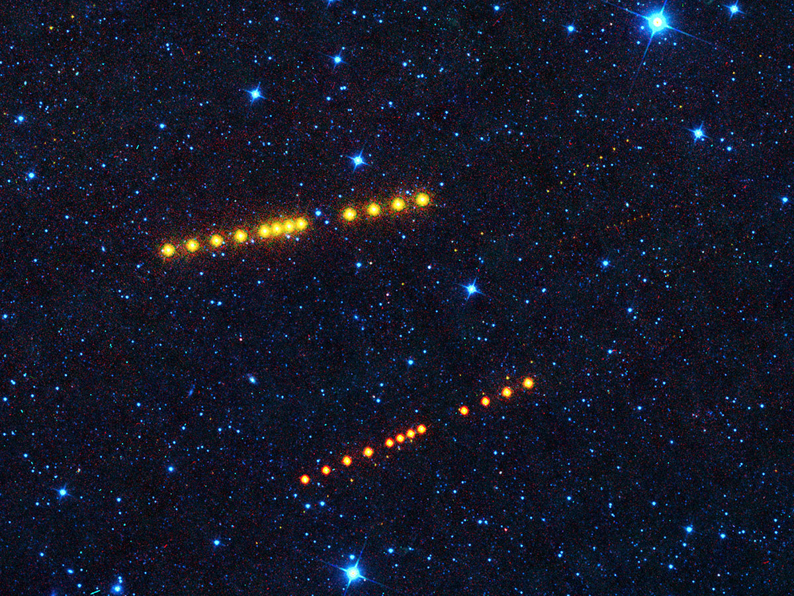
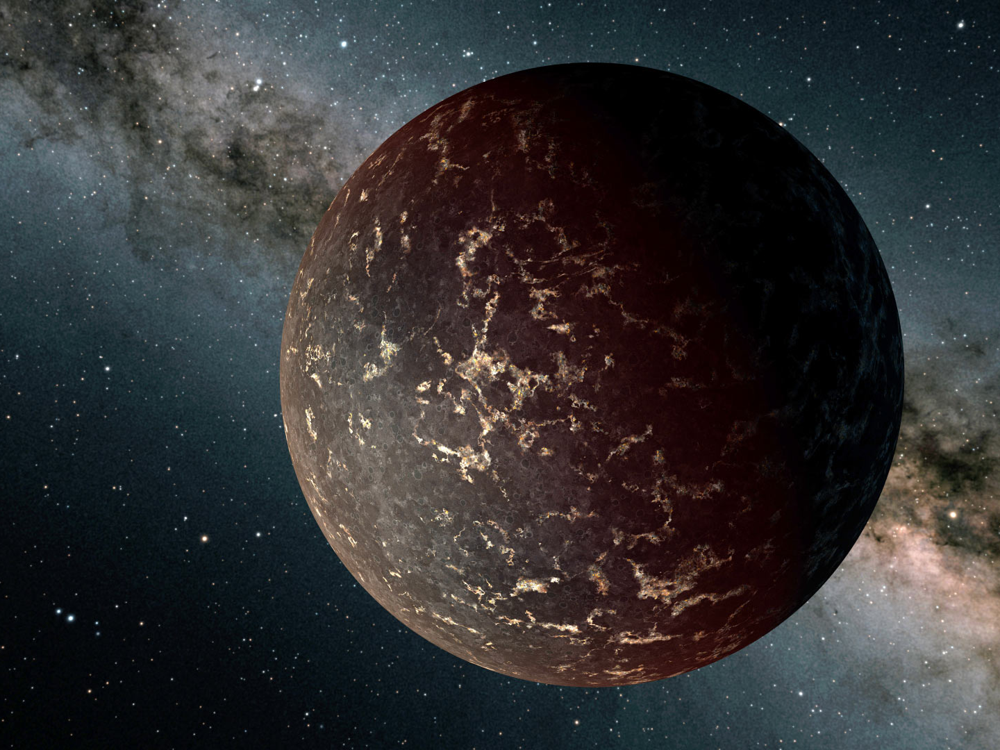
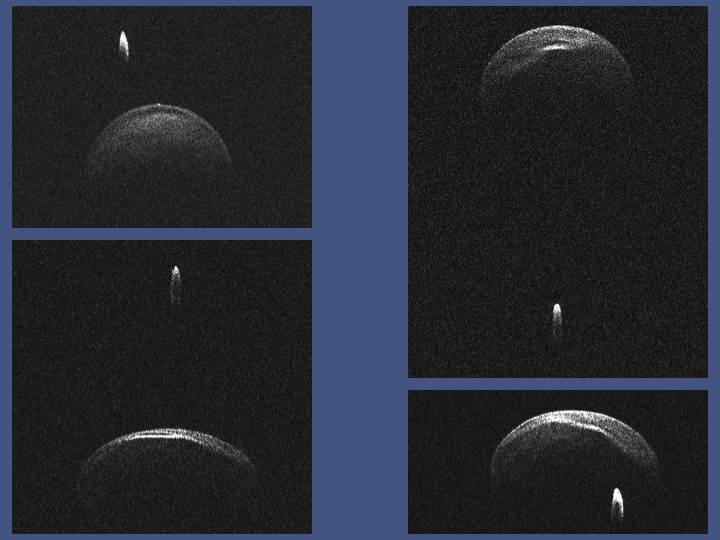
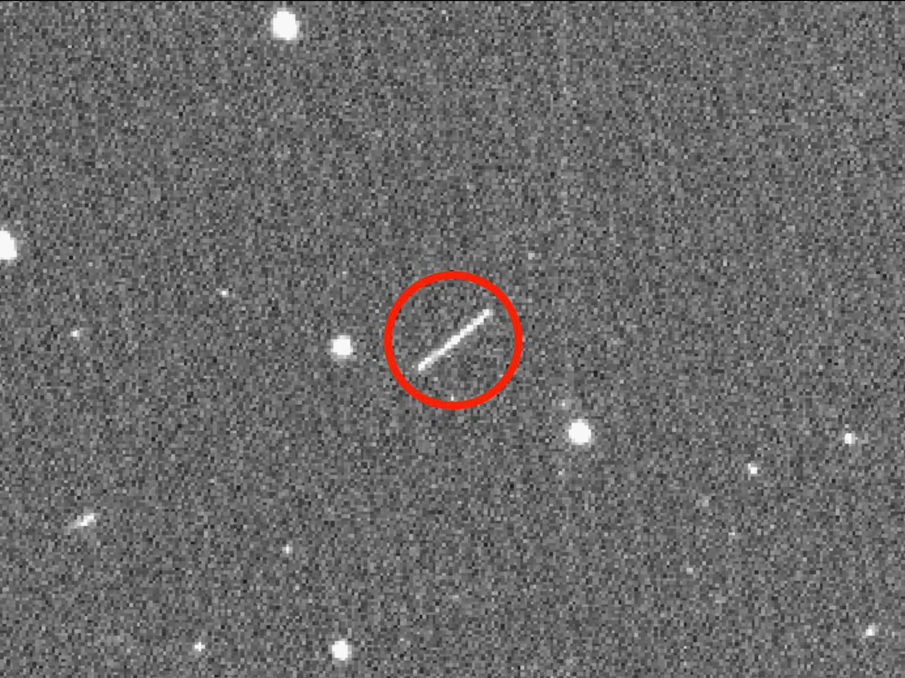

Image Credit: NASA/JPL-Caltech
Analysis of Two-Band WISE Observations of Asteroids
Write description of project here

Image Credit: NASA/JPL-Caltech/R. Hurt, IPAC.
Detecting Rocky Surfaces with JWST

Image Credit: Arecibo/S. J. Ostro et al.
Finding Near-Earth Asteroid Sizes using Radar

Image Credit: ZTF/Caltech
Positional Accuracy of ZTF's Asteroid Streaks